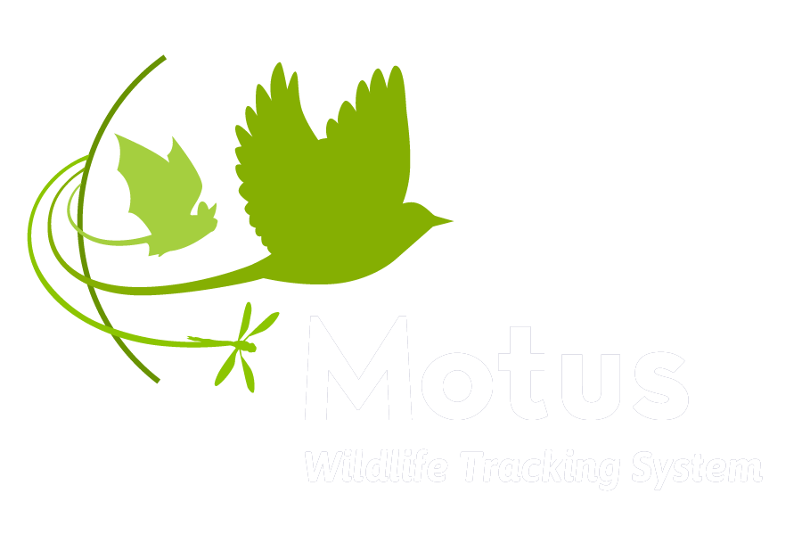

Manage your stations
Manage your tags
Manage your landowners
Explore
All stations
All species
Lucas Berrigan
EN
|
FR
|
ES

Home
About
Resources
Explore Data
Manage Data
Explore Data
Showing data from:
Dates:
all
;
Station:
all
;
Project:
all
;
Region:
all
;
Species:
all
;
Frequency:
all
;
Clear all
922
stations
331
projects
331
animals
922
species
331
projects
Animals
Status
Project
Frequency
Species
Days since last data
Search:
I accept the
privacy policy
.
Agree and download
Points
Regions
Deployments
Tracks
Table